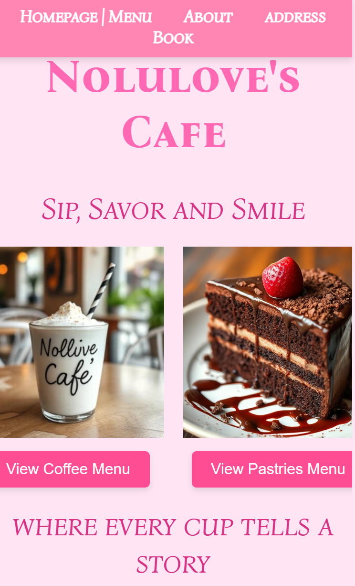
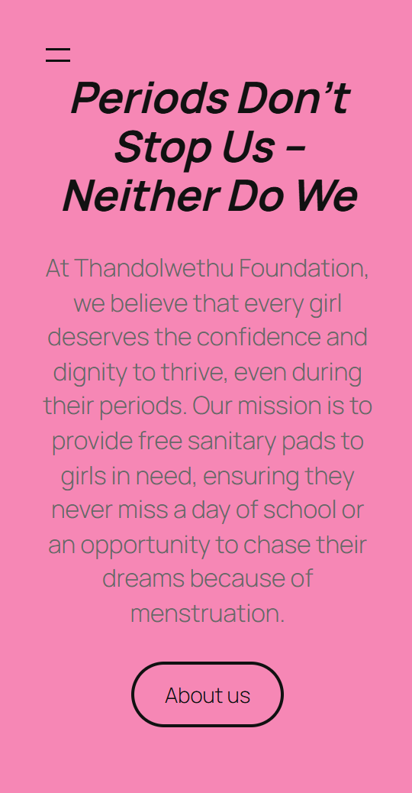
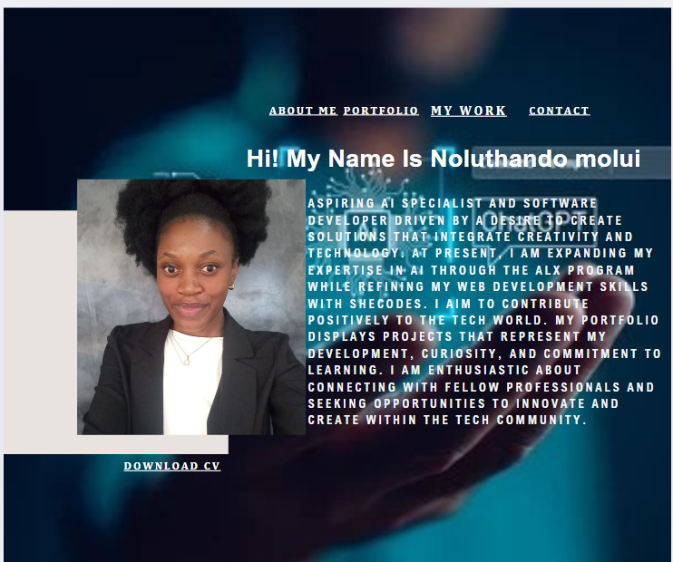

Projects
Beauty Oasis Website Live Demo
Designed and developed an engaging and visually appealing website for Beauty Oasis Weaves, ensuring seamless navigation and user experience. Utilized HTML, CSS, and JavaScript to create interactive and dynamic web pages, including product listings, shopping cart functionality, and contact forms. Integrated Google Fonts and Font Awesome icons to enhance the website's aesthetics and functionality. Implemented responsive design principles to ensure the website is accessible and visually appealing on various devices and screen sizes. Conducted thorough testing and debugging to ensure the website's performance and functionality were optimized. Managed content updates and maintenance tasks, ensuring the website remained current and relevant.
Laptop Repair Booking Site Live Demo

Developed a responsive and user-friendly website for booking laptop repair services using HTML, CSS3, and JavaScript. Implemented a seamless booking system that sends requests directly to the team via email or WhatsApp, enhancing customer convenience. Integrated a live chat feature to provide real-time customer support and assistance. Ensured cross-browser compatibility and optimized the site for mobile devices, improving accessibility and user experience.Worked on front-end design and functionality to create a modern and visually appealing interface.
Nolulove’s Cafe site. Live Demo
Developed a responsive café website using HTML, CSS, and JavaScript, ensuring optimal viewing on various devices with media queries. Integrated Google Fonts and Font Awesome icons for enhanced visual appeal and functionality. Conducted thorough testing, managed content updates, and maintained site performance and usability.
Thandolwethu Foundation Website. Live Demo
I had the privilege of designing and developing a WordPress website for a non-governmental organization committed to distributing sanitary pads to girls in underserved communities. This project involved creating an accessible, informative, and user-friendly platform that effectively communicates the NGO's mission and services. Key features of the site include, Responsive Design, Ensured seamless accessibility across various devices, enhancing user engagement. Donation Integration, Implemented secure online donation capabilities to support fundraising efforts. Educational Resources, Developed sections providing information on menstrual health and hygiene. Volunteer Portal, Created a user-friendly interface for volunteer sign-ups and participation. This project underscores my ability to leverage WordPress to build impactful websites that support meaningful causes.
AI Portfolio Live Demo
I recently designed a comprehensive portfolio using Canva to showcase my AI projects. This portfolio reflects my journey and expertise in artificial intelligence, highlighting key projects and their real-world applications. Each project is presented with detailed descriptions, objectives, methodologies, and outcomes, providing a clear understanding of my approach and problem-solving skills. Utilizing Canva's design capabilities, I incorporated visuals, diagrams, and infographics to effectively communicate complex AI concepts. The portfolio includes links to live demonstrations and GitHub repositories, allowing for an in-depth exploration of the projects. This Canva-designed portfolio not only underscores my technical proficiency but also demonstrates my ability to convey intricate information through engaging and accessible design.